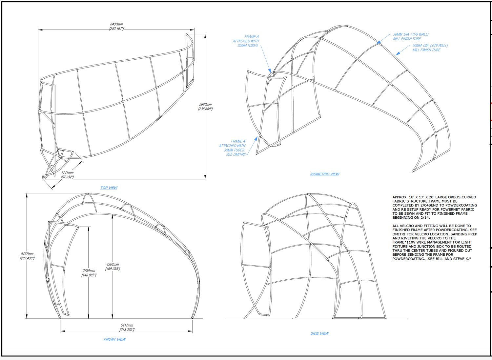
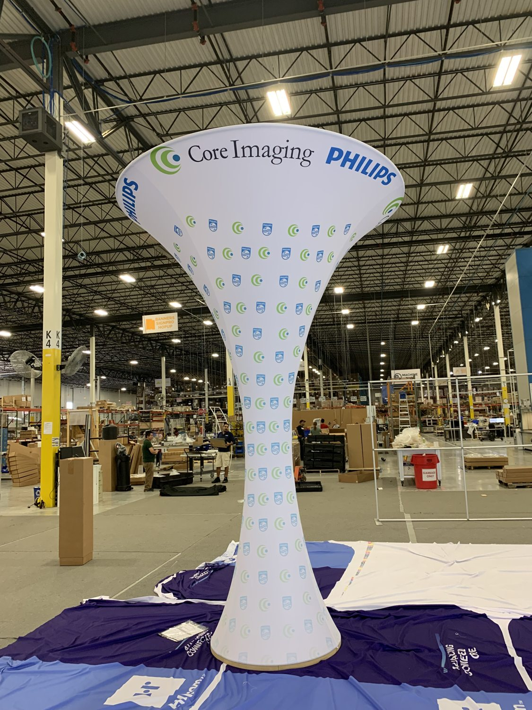
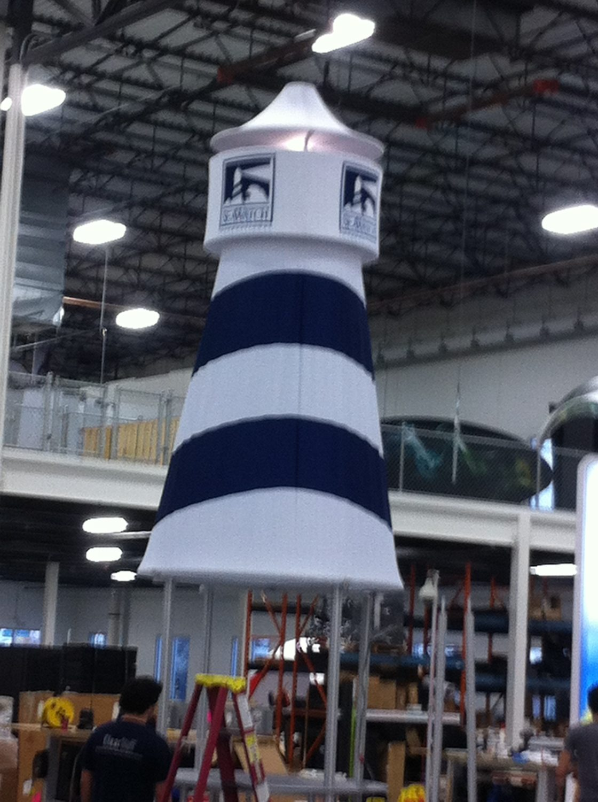

01
Mechanical design
25 years with SolidWorks: part and assembly models, production drawings, and design refinement.
I've spent my working life taking ideas and turning them into things that can be built, tested, improved, and used.
My background began in textile engineering and pattern making. Over time it grew into exhibit design, mechanical engineering, fabrication, and product development. The materials changed. The curiosity didn't.
Learning the practical relationship between materials, patterns, construction, and finished products.
Working with metal parts, assemblies, drawings, prototypes, and the realities of manufacturing.
Approximately 15 years focused on turning product concepts into testable, buildable designs, working between CAD and the shop floor.
Currently working in a shop specializing in sheet metal fabrication, welding, laser cutting, and CNC machining—an environment where design decisions meet real manufacturing processes.
Hands-on engineering work, independent ideas, and a curiosity about what new tools can make possible.
25 years with SolidWorks: part and assembly models, production drawings, and design refinement.
Concepts, prototypes, tests, manufacturing feedback, and practical improvements.
Textile engineering, pattern making, custom fabric exhibits, and structural integration.
Metal fabrication, samples, fit-up, and solving problems where designs meet real materials.
A selection of exhibit structures, fabric forms, production work, and drawings from my earlier portfolio. Real work, photographed as it was built and displayed.










From my original exhibit and product-design archive. Additional project details and dates will be added as they are verified.
Understand the problem. Make a sketch. Build a version. Find out what doesn't work. Improve it. Shop-floor experience makes it difficult to ignore what happens after a drawing leaves the screen.
“Just an old engineer exploring an exciting new potential.”
Since 2026, I've been experimenting with AI tools for research, ideas, and small web projects. I'm learning as I go.